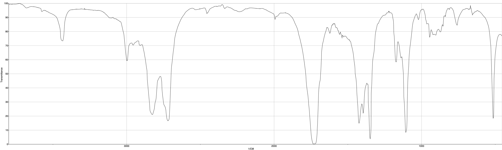
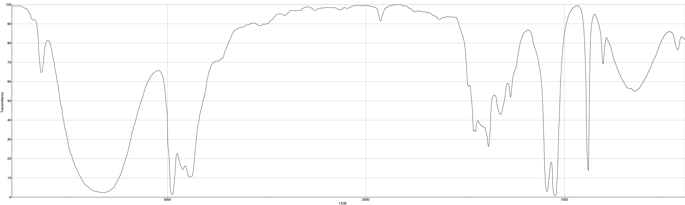

On trouve dans un document publié par l’Institut suisse de prévention de l’alcoolisme (ISPA) les informations suivantes :
Quand une personne consomme de l’alcool, celui-ci commence immédiatement à passer dans le sang. Plus le passage de l’alcool dans le sang est rapide, plus le taux d’alcool dans le sang augmentera rapidement, et plus vite on sera ivre. L’alcool est éliminé en majeure partie par le foie. Dans le foie, l’alcool est éliminé en deux étapes grâce à des enzymes. Dans un premier temps, l’alcool est transformé en éthanal par l’enzyme alcool déshydrogénase (ADH). L’éthanal est une substance très toxique, qui provoque des dégâts dans l’ensemble de l’organisme. Il attaque les membranes cellulaires et cause des dommages indirects en inhibant le système des enzymes. Dans un deuxième temps, l’éthanal est métabolisé par l’enzyme acétaldéhyde déshydrogénase (ALDH).
graph TD;
A[Alcool pur : Ethanol C] -->|Enzyme ADH| B(Ethanal);
B --> |Dégradation ultérieure| C(Synthèse du cholestérol);
Spectroscopie IR
On se propose d’étudier la structure et les fonctions organiques de ces molécules par spectroscopie IR.
Document 1a : Spectroscopie Infrarouge en phase liquide. Spectre IR1 (abscisse en $\pu{cm-1}$)
Document 2b : Spectroscopie Infrarouge en phase liquide. Spectre IR2 (abscisse en $\pu{cm-1}$)
| Liaison | $\ce{C - C}$ | $\ce{C - O}$ | $\ce{C = O}$ (carbonyle) | $\ce{C - H}$ | $\ce{O - H}$ |
|---|---|---|---|---|---|
| Nombre d’onde ($\pu{cm-1}$) | 1000-1250 | 1050-1450 | 1650-1740 | 2800-3000 | 3200-3700 |
-
Le document en introduction évoque les molécules d’éthanol, de formule $\ce{C2H6O}$, et d’éthanal, de formule $\ce{C2H4O}$ : représenter en formule semi-développée ces deux molécules et encadrer leurs fonctions caractéristiques.
-
Quel est le nom du groupe fonctionnel porté par l’éthanol ? À quelle famille appartient cette molécule ?
-
Quel est le nom du groupe fonctionnel porté par l’éthanal ? À quelle famille appartient cette molécule ?
-
En utilisant les données spectroscopiques, associer chaque spectre infrarouge (IR) à la molécule correspondante en justifiant.
Contrôle de qualité d’un vin : dosage par spectrophotométrie de l’éthanol
On peut lire dans le code de la santé publique depuis juin 2000 : catégorie Vins doux : vins, apéritifs à base de vin ne titrant pas plus de 18 degrés. On se propose de vérifier en laboratoire si un vin obéit à cette législation.
Définition
Le titre alcoométrique, exprimé en degré, est égal au nombre de litres d’éthanol contenus dans 100 litres de vin.
Données
- $M(éthanol) = \pu{46,0 g.mol-1}$ ;
- $\rho(\text{éthanol}) = \pu{0,78 g.mL-1}$.
Afin de procéder au contrôle, on réalise le titrage par spectrophotométrie du vin en suivant le protocole suivant :
- Première étape : On recueille l’éthanol du vin par distillation.
- Deuxième étape : L’éthanol est oxydé par la NAD+ dans une réaction catalysée par une enzyme spécifique. La réaction produit de la nicotinamide-adénine-dinucléotide réduite ($\ce{NADH}$) en quantité de matière égale à celle de l’éthanol dosé selon l’équation : $$ \ce{Ethanol + NAD^+ -> Ethanal + NADH + H^+ } $$
- Troisième étape : La $\ce{NADH}$ absorbant dans le domaine UV, on mesure son absorbance par spectrophotométrie.
L’étalonnage du spectrophotomètre avec différentes solutions d’éthanol permet de vérifier la loi de Beer-Lambert : $A = k \, C_m$ avec $k = \pu{1,6e–3 L.mg-1}$ et $C_m$ la concentration massique d’éthanol dans l’échantillon.
Réalisation de la mesure :
- On distille $\pu{10 mL}$ de vin ;
- Le distillat est ensuite ajusté à $\pu{100 mL}$ avec de l’eau distillée pour obtenir une solution appelée $S$.
- On prépare l’échantillon à doser par spectrophotométrie en introduisant dans une fiole jaugée de $\pu{100 mL}$ :
- $\pu{1 mL}$ de solution $S$ ;
- le catalyseur ;
- $\ce{NAD^+}$ en excès ;
- On complète avec de l’eau distillée.
L’absorbance mesurée pour cet échantillon vaut : $A_e = \pu{0,15}$.
-
Déterminer à partir de l’absorbance mesurée $A_e$, la concentration massique $C_m$ en éthanol de l’échantillon étudié.
-
En tenant compte des deux dilutions successives, calculer les concentrations massiques en éthanol suivantes :
- $C_S$ dans la solution $S$.
- $C_V$ dans le vin.
-
Quelle est la valeur du titre alcoométrique exprimé en degrés du vin ?
-
Ce vin est-il conforme au code de la santé publique ?